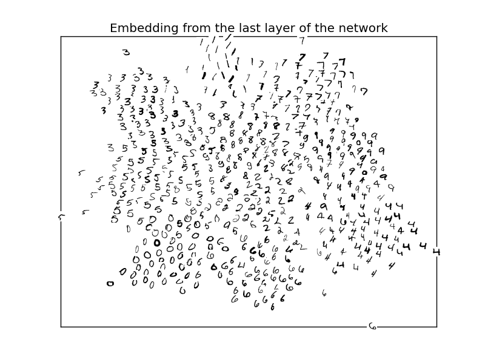

Siamese networks¶
Python source code: siamese_mnist.py
import random
import matplotlib.pyplot as plt
import numpy as np
import deeppy as dp
# Fetch MNIST data
dataset = dp.dataset.MNIST()
x_train, y_train, x_test, y_test = dataset.data(flat=True, dp_dtypes=True)
# Normalize pixel intensities
scaler = dp.StandardScaler()
x_train = scaler.fit_transform(x_train)
x_test = scaler.transform(x_test)
# Generate image pairs
n_pairs = 100000
x1 = np.empty((n_pairs, 28*28), dtype=dp.float_)
x2 = np.empty_like(x1, dtype=dp.float_)
y = np.empty(n_pairs, dtype=dp.int_)
n_imgs = x_train.shape[0]
n = 0
while n < n_pairs:
i = random.randint(0, n_imgs-1)
j = random.randint(0, n_imgs-1)
if i == j:
continue
x1[n, ...] = x_train[i]
x2[n, ...] = x_train[j]
if y_train[i] == y_train[j]:
y[n] = 1
else:
y[n] = 0
n += 1
# Prepare network inputs
train_input = dp.SupervisedSiameseInput(x1, x2, y, batch_size=128)
test_input = dp.SupervisedInput(x_test, y_test)
# Setup network
net = dp.SiameseNetwork(
siamese_layers=[
dp.Dropout(),
dp.FullyConnected(
n_out=800,
weights=dp.Parameter(dp.AutoFiller(), weight_decay=0.00001),
),
dp.Activation('relu'),
dp.FullyConnected(
n_out=800,
weights=dp.Parameter(dp.AutoFiller(), weight_decay=0.00001),
),
dp.Activation('relu'),
dp.FullyConnected(
n_out=2,
weights=dp.Parameter(dp.AutoFiller(), weight_decay=0.00001),
),
],
loss=dp.ContrastiveLoss(margin=0.5),
)
# Train network
trainer = dp.StochasticGradientDescent(
max_epochs=10,
learn_rule=dp.RMSProp(learn_rate=0.001),
)
trainer.train(net, train_input)
# Plot feature in 2D space
feat = net.features(test_input)
colors = ['tomato', 'lawngreen', 'royalblue', 'gold', 'saddlebrown',
'violet', 'turquoise', 'mediumpurple', 'darkorange', 'darkgray']
plt.figure()
for i in range(10):
plt.scatter(feat[y_test == i, 0], feat[y_test == i, 1], s=3,
c=colors[i], linewidths=0)
plt.legend([str(i) for i in range(10)], scatterpoints=1, markerscale=4)
plt.title('Embedding from the last layer of the network')
Total running time of the example: 1 minutes 12.4 seconds